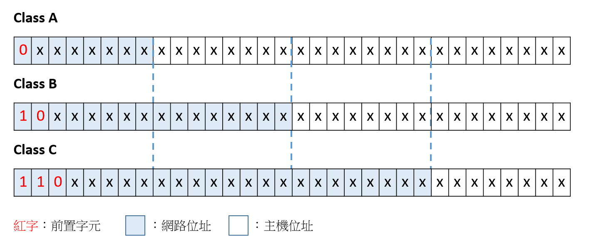

IP位址的分類
〈網路世界中的門牌號碼〉第二回
前一回講了IPv4與IPv6之間的關係，以及網址跟IP位址之間的關聯。這回將要把焦點放在IP位址本身，看看它有什麼分類、如何處理快要不夠的IP位址、以及子網路遮罩的用途究竟是什麼。
IP位址的分類
雖然如同前一回所說，單從IP位址看不出網站內容跟什麼有關，但其實這一串數字還是有一些意義在裡面。由4個0～255的數字所構成的IP位址可以區分成：
- 網路位址
- 主機位址
IP位址大致區分成5個類，從class A到class E，能夠在一般系統設定的是前3個類。下面用一個表格來介紹class A到class E：
不同類別的網路位址所使用的位元數並不一樣。例如class A使用8個位元，class B使用16個位元。前置位元表示這個網路位址最前面的位元要放的數字(以2進位系統來看)，用來區別不同的類別。例如在class A的網路位址最前面放上0，那麼它能表示的數字範圍就只能從0到127，而在class B的網路位址最前面指定為10，那麼它的網路位址第一個數字就會從128開始，到191之間，如此就能避免重複的IP位址。

屬於class A的網路雖然網段數量最少，只有126個，但是一個網段底下擁有最多的主機數量(224-2個)，適合給底下擁有非常多主機的大型組織使用。相反的，class C的網路網段數最多(221個)，但是一個網段底下的主機數量最少，只有254個，這就比較適合給小型組織使用。
神秘的「減2」
仔細觀察表格內容，會發現class A的網路位址有「減2」這一項。會需要減2是因為有些特殊的網路位址沒辦法真正的拿來指向特定的網段。像是0.x.x.x代表的是「本機」，也就是自己正在用的電腦；127.x.x.x表示loopback address，也就是「本機對本機」的網路，這兩個都只是內部電腦自己使用而已，所以需要被扣掉。
另外，每個IP類別的主機數量也都有「減2」這一項：當主機位址全部都是0的時候，這個IP代表的正是這個網段本身；而主機位址全部都是1的話表示在這個網段的廣播(對這個網段上的所有主機發出訊號)，所以這兩個主機位址沒辦法表示特定的主機，因此必須扣掉。
IP位址不夠用？靠虛擬IP！
還記得前面提到的IP位址不夠用的問題嗎？ 那麼為什麼IPv4還能夠繼續被大家使用下去呢？其實是因為這三類(class A～C)IP位址中都各有所謂的「虛擬IP」。虛擬IP是個浮動的IP位址，它是遵守DHCP(Dynamic Host Configuration Protocol)協定，由網路服務供應商或是網管人員分配的區域網路內的位址。講的白話一點，就是說這些IP位址是共用的，有人想要連上網時，就把目前沒有人用的虛擬IP分給他，等他用完之後就得把這個IP位址還回去，讓其他要上網的人繼續使用。這個共用的性質就可以解決給每個人一個固定IP造成IP數量不夠的問題了。
不同類別的虛擬IP位址如下：
- Class A: 10.0.0.0 ～ 10.255.255.255
- Class B: 172.16.0.0 ～ 172.31.255.255
- Class C: 192.168.0.0 ～ 192.168.255.255
子網路遮罩
當我們拿到一串32個由0跟1構成的IP位址時，要區分出它的網路位址跟主機位址靠的就是子網路遮罩(netmask)。將IP位址跟子網路遮罩做and運算之後，得到的結果就是網路位址。
如上圖，再次以203.66.32.35為例子。從203這個數字可知這個IP是屬於class C，所以用預設的class C子網路遮罩，把IP位址跟子網路遮罩做and運算，計算的結果203.66.32.0就是它的網路位址。而剩下的(35)就是它的主機位址囉！看到這裡或許會有個疑問，就是既然我們只要看第一個數字就可以知道它的類別，然後區分出網路位址跟主機位址(class C的話網路位址是前24個位元，主機位址是最後8個位元)，那幹嘛需要子網路遮罩呢？
讓我來看另一個例子。IP位址203.66.32.35是陽明交大奈米科技碩博士班的網頁伺服器位址，它的網段(203.66.32.0)底下預設可以有254台主機(28-2)。後來發現實際上一個網段下不會用到那麼多主機，而且還希望把這個網段再分成4個子網段，用來分配給「高分子」、「金屬材料」、「陶瓷材料」、「半導體材料」這四個領域。這個時候就可以把子網路遮罩設定成255.255.255.172，也就是說，把本該用來表示主機位址的數字當成網路位址的一部分，這樣就能夠更合理的分配網段與主機之間的關係，也方便之後的管理與廣播等等。至於為什麼要設定最後一個數字是172？預設的class C子網路遮罩是前面24個1，後面8個0，為了分出更多的網段，所以把本來1的地方繼續延伸2位，所以變成26個1，6個0。而IPv4是以8個位元為一個單位換成10進位數字，所以最後的8個2進位數字是11000000，也就是10進位的172了。
小結
IP位址不僅僅是一串數字。從它所屬的類別能夠大致了解使用這個IP的組織規模；透過虛擬IP能夠解決IP位址不夠用的問題；藉由設定子網路遮罩能夠更加合理分配網段與主機間的關係。想當初讀大學的時候，要在宿舍使用網路前還得自己key宿舍專用的IP位址跟子網路遮罩號碼，到了現在才總算搞懂當初做這些設定的意義呢！

國立交通大學材料系奈米科技碩士班畢業(現在應該稱國立陽明交通大學ʕ •ᴥ•ʔ)。雖然非資工相關科系畢業，但本著對資工領域的興趣而開始自學相關知識，目前則專攻網頁相關知識，如HTML5、CSS3、JavaScript、Node.js。以跨領域學習者的角度來介紹資工領域相關的知識，除了加深自己對相關知識的理解，也期望同是跨領域學習的朋友們因為瀏覽我的文章而有更多不一樣的觀點可以參考。